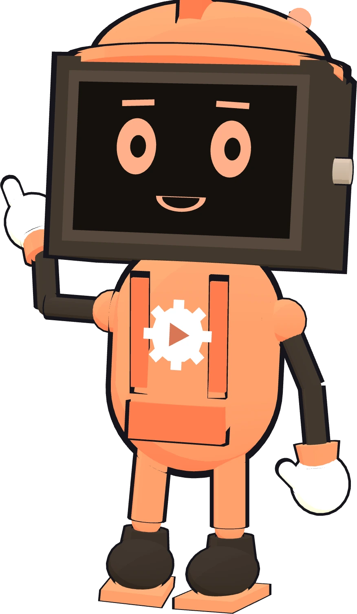
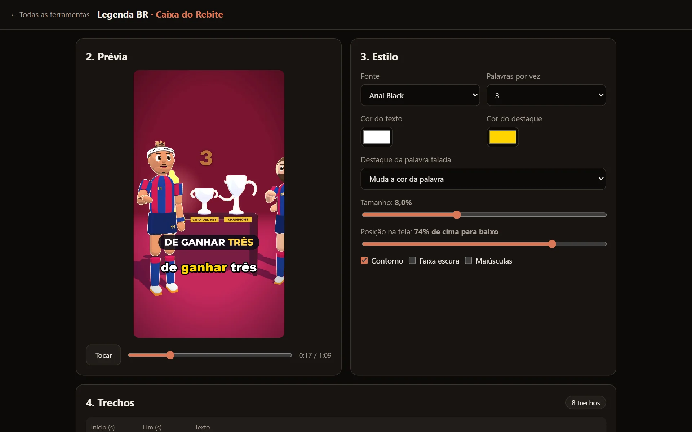
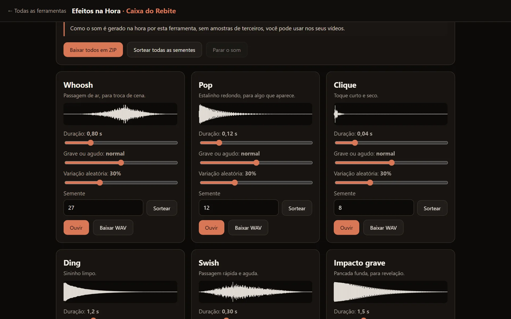
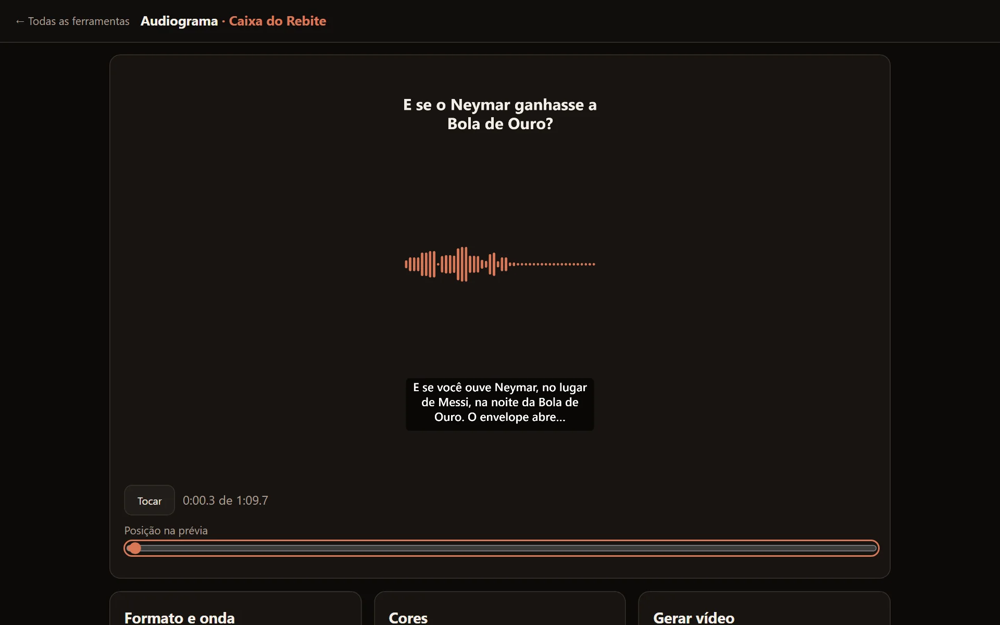
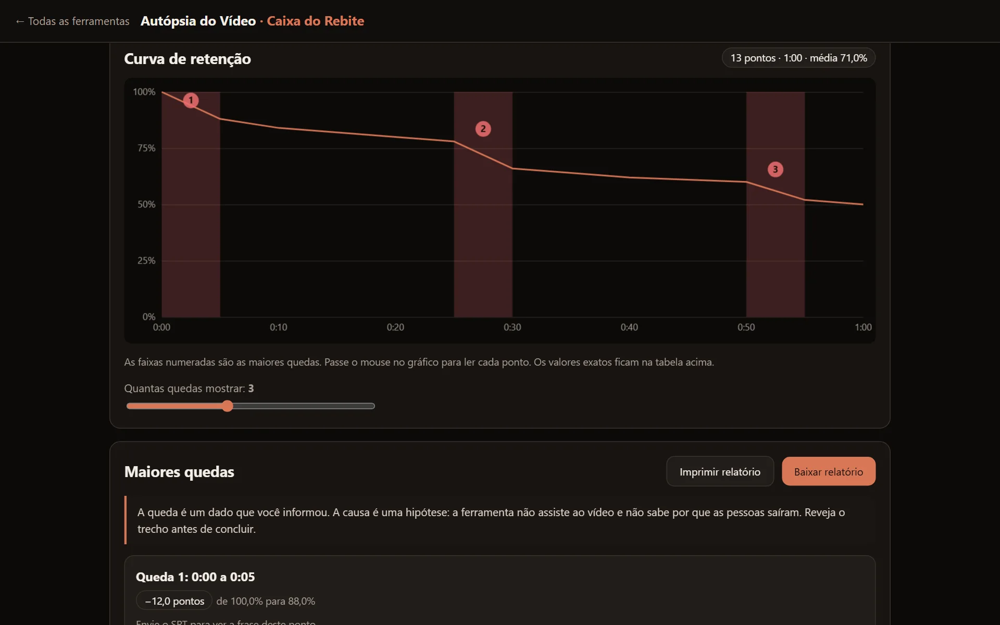
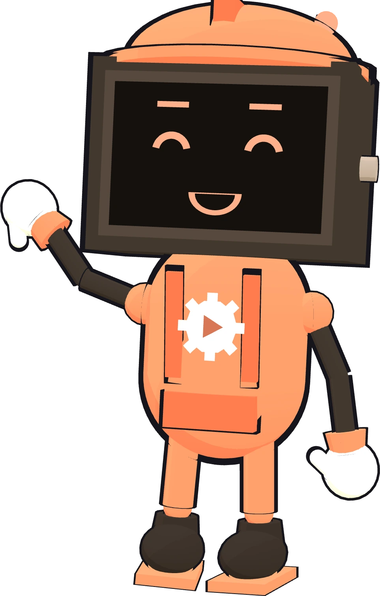
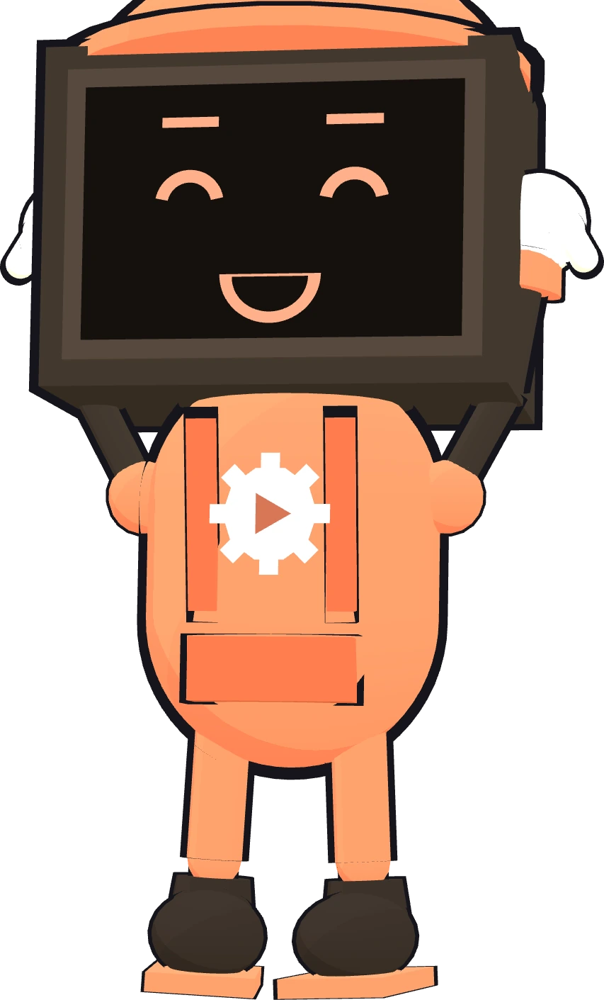

50 ferramentas para criar vídeo, por R$ 19,90.
Corte silêncios, coloque legenda, limpe o áudio, grave a tela e confira a capa. Tudo abre no navegador, sem instalar programa e sem mensalidade.
Veja como é por dentro.
Estas são as ferramentas de verdade, abertas no navegador e usando um vídeo dos nossos canais.
Teste uma agora mesmo.
Esta é a conta do Corta Silêncio, rodando aqui na página com a narração de um vídeo nosso. Mexa nos controles e veja os cortes mudarem.
Em laranja, o que sai. Na ferramenta completa, você baixa o áudio ou gera o vídeo cortado.
Três motivos para caber no seu dia.
Abre no navegador
Descompacte, dê dois cliques e use no Edge ou no Chrome. Nenhum programa é instalado.
Paga uma vez
São R$ 19,90 no total. Sem assinatura, sem créditos e sem limite de uso nas ferramentas.
Fica no seu computador
Seus vídeos e áudios não são enviados para servidor nenhum. O trabalho acontece na sua máquina.
Do pagamento ao uso em poucos minutos.
Baixe o arquivo
Depois da compra, a Kiwify libera o zip da Caixa para download.
Descompacte a pasta
Coloque a pasta onde preferir. O zip tem menos de 1 MB, e cada ferramenta tem a sua pasta.
Abra o COMECE-AQUI
Dois cliques e aparecem todas as ferramentas. Escolha uma e comece.
O que tem na Caixa.

Da gravação bruta ao vídeo pronto.
O básico da edição, sem abrir um editor pesado.
- Corta Silêncio tira as pausas sozinho
- Legenda BR transcreve em português, deixa corrigir e coloca no vídeo
- Clipador sugere trechos de um vídeo longo
- Reenquadra passa do horizontal para o vertical

Deixe o som agradável de ouvir.
Áudio ruim faz a pessoa sair do vídeo mesmo quando a imagem está boa.
- Volume Certo mede em LUFS e ajusta para o alvo que você escolher
- Limpa Ruído reduz o chiado de fundo
- Abaixa-Trilha baixa a música quando alguém fala
- Efeitos na Hora cria efeitos sonoros do zero


Confira antes de publicar.
Veja o que a tela do celular vai esconder e como a capa fica no meio das outras.
- Prova da Capa mostra a sua capa em um feed simulado
- Zona Segura marca onde a interface dos apps pode cobrir o vídeo
- Autópsia do Vídeo cruza a retenção com a frase dita em cada queda
- Paleta do Canal tira as cores de uma imagem e confere o contraste

As 50 ferramentas, uma por uma.
Nenhuma ferramenta com esse nome.
Quem fez a Caixa.
Eu sou o Rebite, mascote da Fábrica de Canais. A Fábrica cria canais de vídeo com IA e já abriu vários projetos de graça no GitHub, para você ver como a gente trabalha antes de comprar qualquer coisa.
A Caixa é diferente do produto principal da Fábrica. Aqui não há animação 3D, geração de roteiro nem publicação automática: são ferramentas que você abre e usa uma de cada vez.

Leve as 50 ferramentas
Pagamento único pela Kiwify, com Pix, cartão ou boleto.
- 50 ferramentas em uma pasta só
- Página inicial com busca
- Instruções e limites de cada ferramenta
- Garantia de 7 dias
Antes de comprar
- Precisa de computador com Edge ou Chrome. Foi feito e testado para Windows.
- Não é feito para celular.
- Vídeo é gerado em tempo real: 1 minuto leva cerca de 1 minuto, com a aba aberta e visível.
- Legenda BR e Clipador baixam cerca de 107 MB na primeira transcrição. A transcrição erra, principalmente em nomes próprios.
- Vídeos muito longos podem esgotar a memória em computadores mais simples.
- As ferramentas ajudam na produção. Elas não garantem views, inscritos nem renda.
Perguntas comuns.
Preciso instalar alguma coisa?
Não. Você descompacta a pasta e abre as páginas no Edge, que já vem no Windows, ou no Chrome.
Preciso do Claude ou de chave de API?
Não. As ferramentas funcionam sozinhas no navegador. Nenhuma pede conta, cadastro ou chave.
Funciona sem internet?
Depois de baixar, sim. A exceção é a primeira transcrição do Legenda BR e do Clipador, que baixa o modelo de voz. Depois disso, a transcrição também funciona sem internet, enquanto os dados do navegador não forem limpos.
O Windows vai bloquear?
As ferramentas são páginas HTML, sem arquivo .exe. Isso evita o bloqueio comum de programas desconhecidos, mas o aviso pode variar conforme o antivírus e o navegador de cada computador.
Serve para qualquer nicho?
Sim. Nenhuma ferramenta depende do assunto do canal. Elas trabalham com os seus arquivos e com os dados que você informa.
E se eu não gostar?
Você tem 7 dias de garantia para pedir o reembolso pela Kiwify.
Como tiro dúvidas depois da compra?
Escreva para sparks.games.studio@gmail.com.
